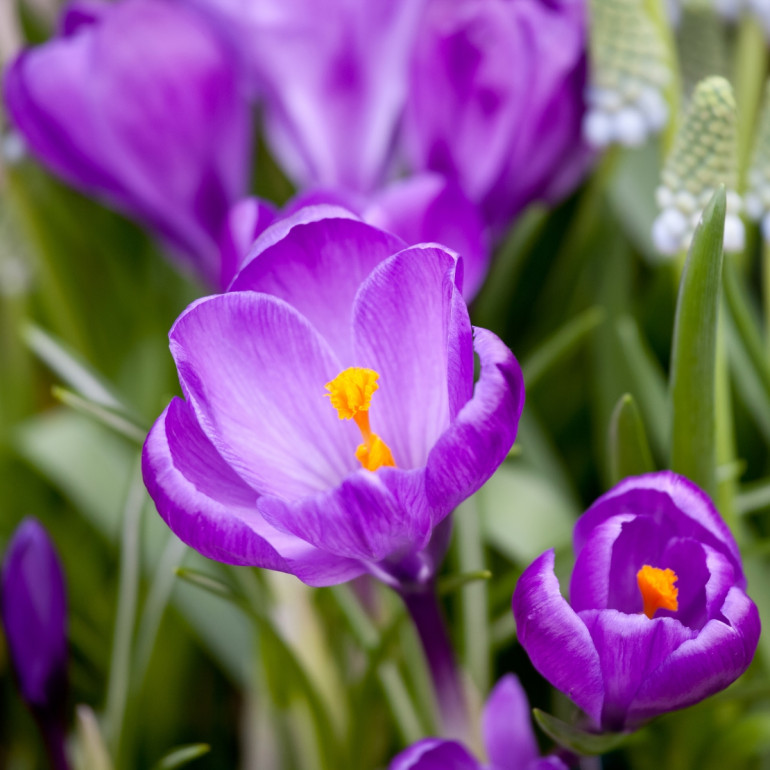
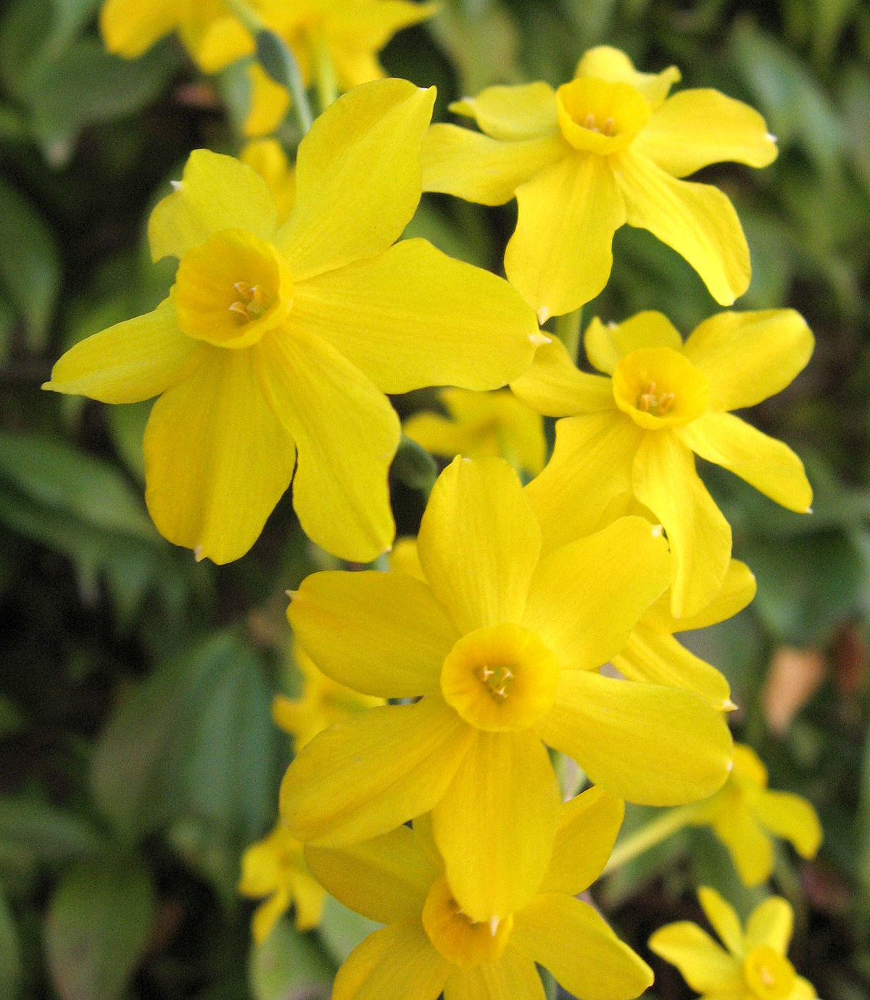
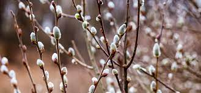

Krokus
Krokusy są dla nas przede wszystkim zwiastunami wiosny. Rozkwitają już w lutym-marcu, niektóre odmiany kwitną też w kwietniu. W ogrodach uprawiamy przede wszystkim krokusy wiosenne (Crocus vernus) i ich odmiany oraz mieszańce. Do tego gatunku bywa zaliczany też dziko rosnący krokus spiski, którego łany pokrywają górskie łąki. Ale gatunków krokusów jest całkiem sporo (ponad 80) i są wśród nich też takie, które kwitną jesienią. Najpopularniejszym z nich jest krokus siewny (Crocus sativus), który w dodatku dostarcza cennej przyprawy - szafranu. Szafran to znamiona kwiatów, wyjątkowo okazałe u tego gatunku.
Żonkil
Niektórzy używają zamiennie nazw żonkil i narcyz. Nie jest to prawidłowe, ponieważ… każdy żonkil jest narcyzem, ale nie każdy narcyz jest żonkilem ;) Żonkile to po prostu jeden z gatunków należących do narcyzów. Tak więc przyjęło się – w świecie amatorów – że białe kwiaty to narcyzy, a żółte to żonkile.Żonkile, czyli narcyzy trąbkowe, to swoisty symbol Wielkanocy. Świetnie się prezentują we wielkanocnych dekoracjach, a ich intensywna barwa i świeżość podkreślają fakt, że przyszła wiosna :)
Bazie
Kotki, nazywane również baziami, są złożone z setek niepozornych kwiatów pozbawionych płatków i tworzących jeden kwiatostan. Bazie zawiązują się już późnym latem poprzedniego roku u nasady liści na końcach jednorocznych pędów, chociaż wtedy trudno je jeszcze dostrzec.Jesienią, po opadnięciu liści, osłonięte są ochraniającymi je przed zimowym mrozem łuskami.